… jsme strávili u Franty na Velehradě. A ačkoliv jsme všude chodili pozdě, stejně jsme toho stihli spoustu. Od vydařené spolujízdy, výletu na Buchlov, česnekových slavností v Buchlovicích přes naši první návštěvu Letní filmové školy v Uherském Hradišti až po línou neděli a snídani s Pipi dlouhou punčochou :D. Už dlouho mi nebylo tak líto, že má víkend jen dva dny :-)!
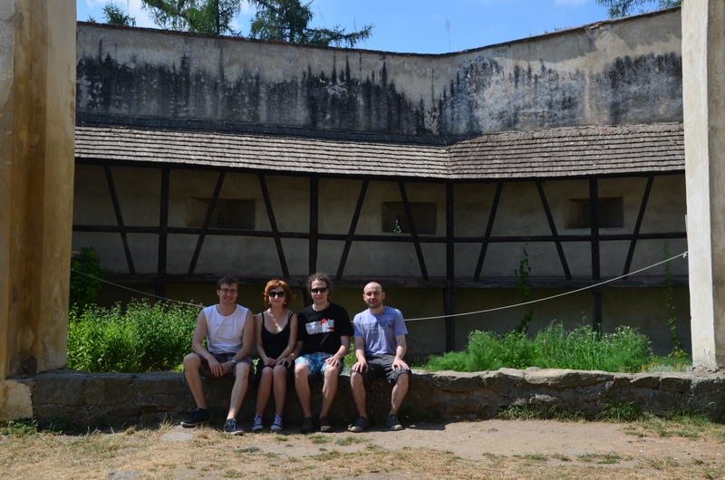
Na Buchlově
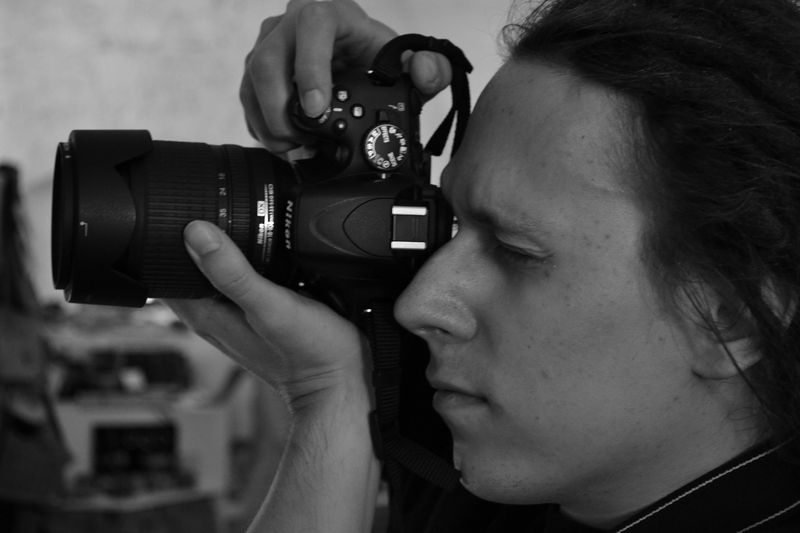
Fotograf Péťa
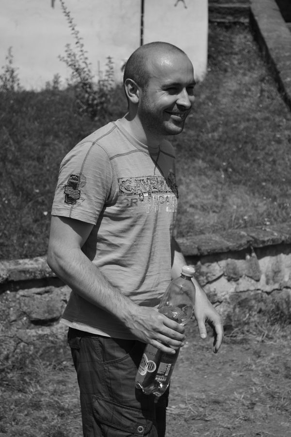
Panoš Panny :D
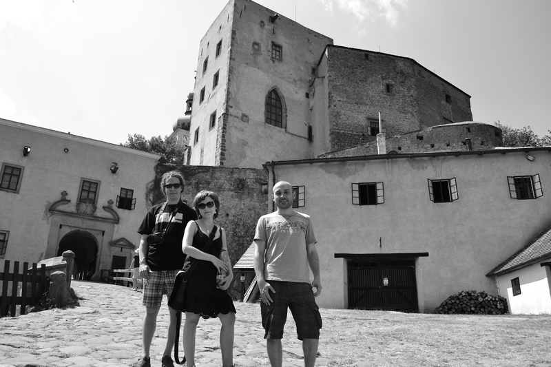
Pózičky před hradem
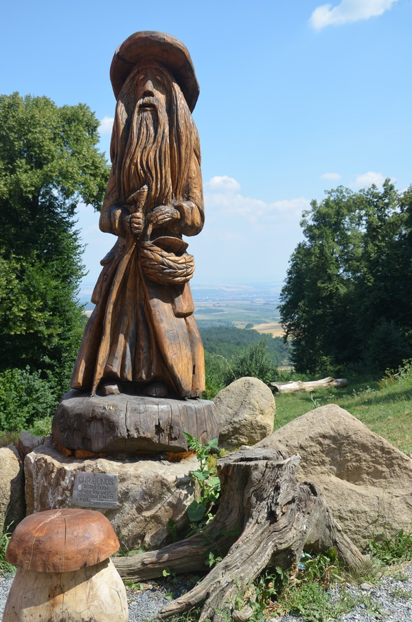
Chřibonoš
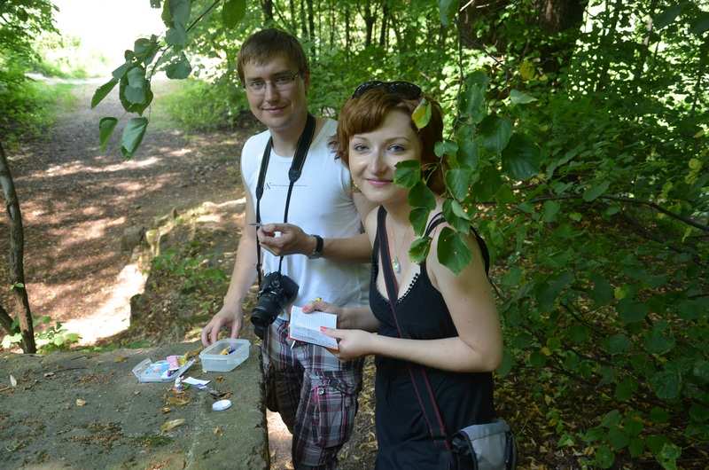
Kešování musí být
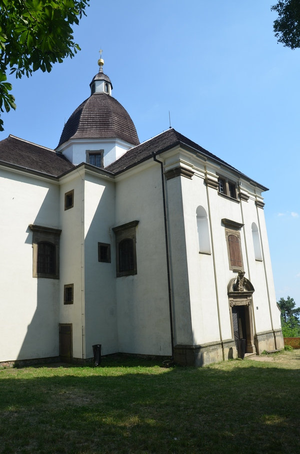
Kaple na Barborce
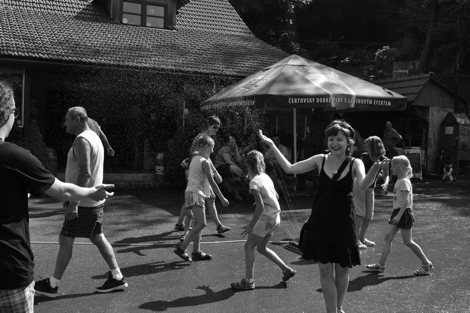
Osvěžení přišlo vhod :)
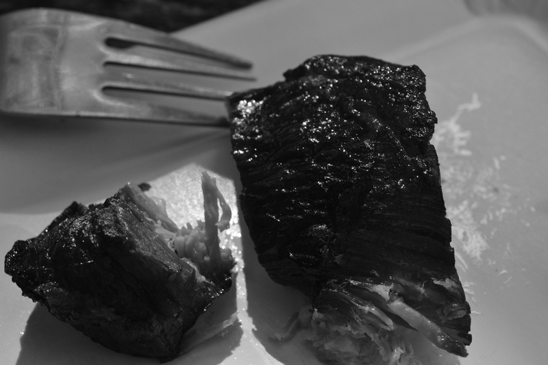
A něco na zub jakbysmet
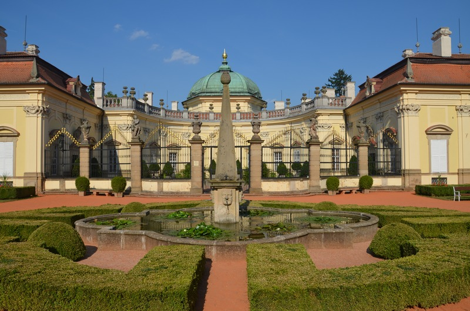
Buchlovice
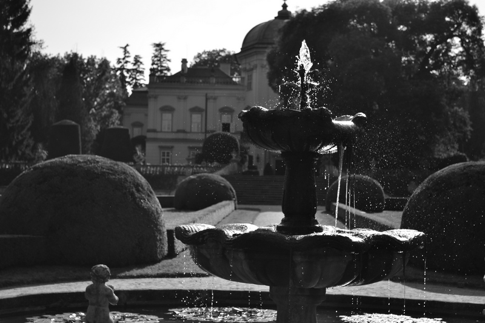
V zámeckém parku
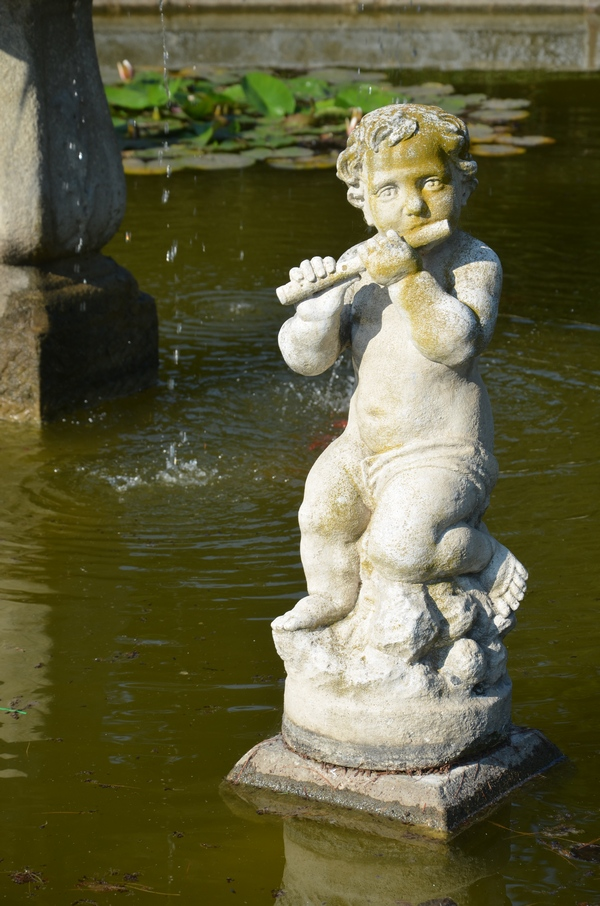
Detail kašny
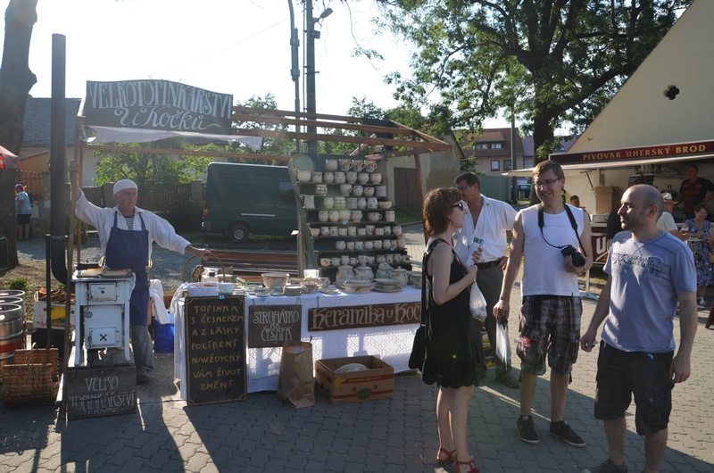
Nejlepší stánek s česnekovýma topinkama :-)!
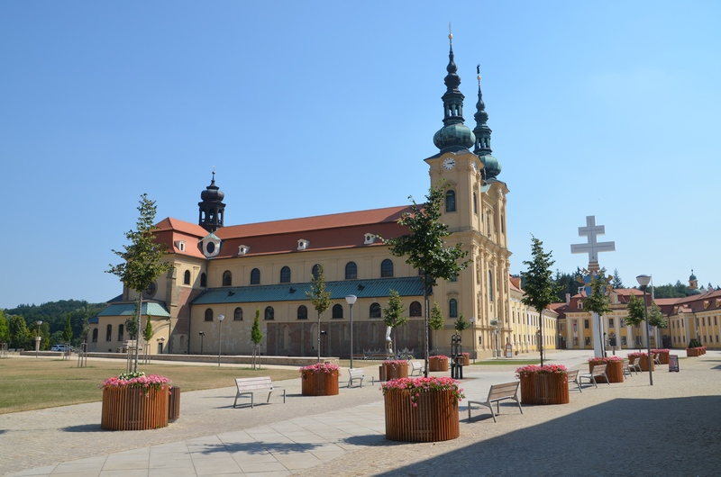
Neděle na Velehradě
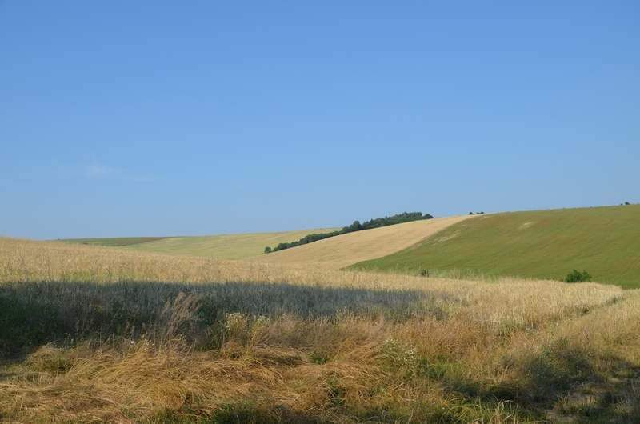
Požáry ze čtyř stran…
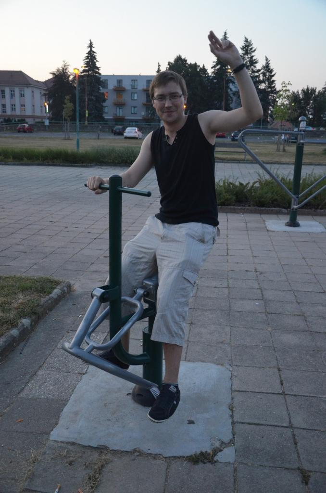
V Hradišti se kluci vyřádili :D
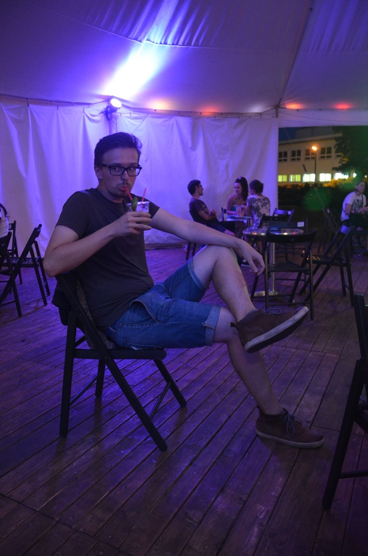
Filip a jeho “Čauky mňauky drink” :D
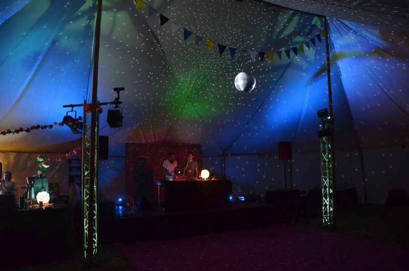
Párty!!!
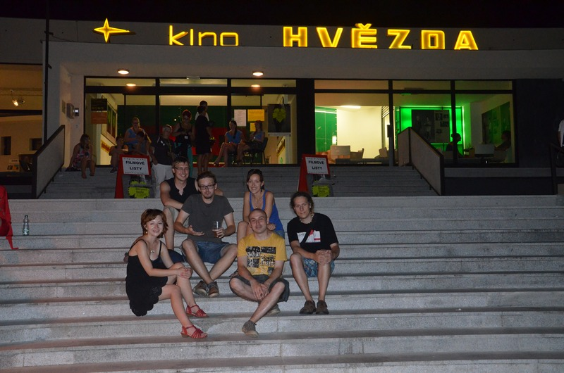
Loučíme se před kinem Hvězda
Na závěr už zbývá jen dodat, že barevné fotografie fotil Péťa a černobílé jsou dílem Franty.